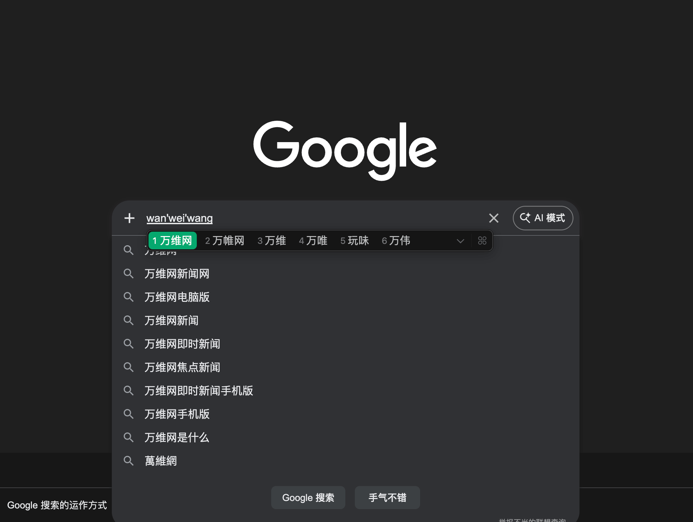

For many languages, especially Chinese, Japanese, and Korean, text is entered through an Input Method Editor (IME). IMEs introduce a composition phase where users build up text before it is committed.
If your application ignores this phase, it can break interactions like chat, search, and forms.
This guide explains how IMEs work on the web, and how to design web applications that behave correctly across browsers.

When a user types with an IME, the browser enters a composition session. During this time, keystrokes update an intermediate string, not the final value. The user may press Enter to select a candidate, not to submit. And the final text is only committed when the composition ends.
The core composition model is the same on mobile and desktop, but the interaction details may differ. On desktop, users often rely on hardware keys such as Enter to choose candidates, while on mobile they more often use virtual keyboards and candidate bars. The same rule applies everywhere: respect composition state.
The web platform exposes this state through events and properties, like:
compositionstart, compositionupdate, compositionendKeyboardEvent.isComposingIf your code treats Enter as submit regardless of composition state, you will interrupt the user mid-input.
This often appears in places like chat message inputs, search fields, and comment forms.
A typical problematic handler looks like this:
input.addEventListener('keydown', (e) => {
if (e.key === 'Enter') {
sendMessage();
}
});For IME users, pressing Enter during composition selects a candidate. The handler above fires anyway and sends incomplete text.
Always check whether composition is active before acting on Enter.
input.addEventListener('keydown', (e) => {
if (e.key === 'Enter' && !e.isComposing) {
sendMessage();
}
});This small condition prevents premature submission.
If you have an IME available, switch to the IME and type in both fields and press Enter while the IME is still choosing a candidate. The broken panel will submit too early, while the correct panel will wait until composition has ended.
Watch the composition status line and the submitted-text area under each input as you try the same action in both panels.
Broken handler
Submits on every Enter press, even when composition is active.
Composition status: Idle
Submitted text
Correct handler
Submits only when Enter is pressed after composition has ended.
Composition status: Idle
Submitted text
IME bugs are easy to miss if you only test with standard keyboards.
Use system IMEs for Chinese, Japanese, or Korean to type partial words and press Enter to select candidates, and verify that no submission occurs until composition ends.